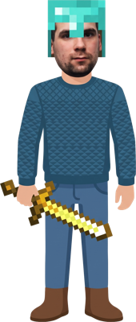

Раннер «Побег»
Платформер в духе Mario с заданиями из Among Us.
Четыре мира. Следующий открывается после победы в предыдущем:
Управление: A/D или стрелки: бег. Пробел, W или ↑: прыжок. E: задание. Esc: закрыть задание. R: заново.
Бой «Стальная волна»
Танки, три вида оружия и дроны. Продержись как можно дольше.
Управление: WASD: движение. Мышь: прицел. Левая кнопка: огонь. 1/2/3: оружие. Q: дрон. R: заново.
Блиц по истории
10 вопросов, на каждый 12 секунд. Выбери свой класс. Быстрые ответы и серия верных ответов дают больше очков. Вопросы и варианты ответов каждый раз собираются заново и повторяются, только когда закончится весь банк класса.
Выбери класс, чтобы начать
Очки: 0
Профиль игрока

Монеты: 0
Рекорд раннера: 0
Рекорд боя: 0
Сыграно игр: 0
Рекорды викторин: —
Прогресс хранится в браузере на этом устройстве.
Магазин
Улучшения работают в играх сразу. Скины можно надевать и снимать.